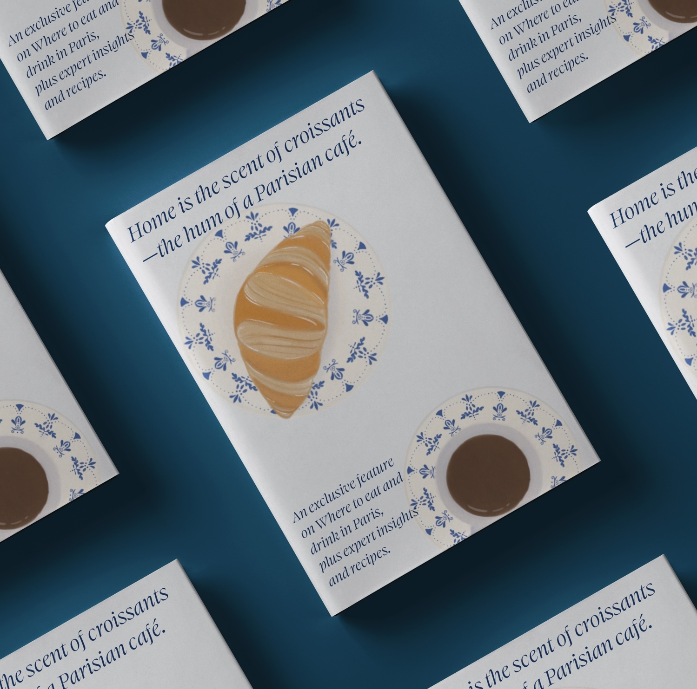
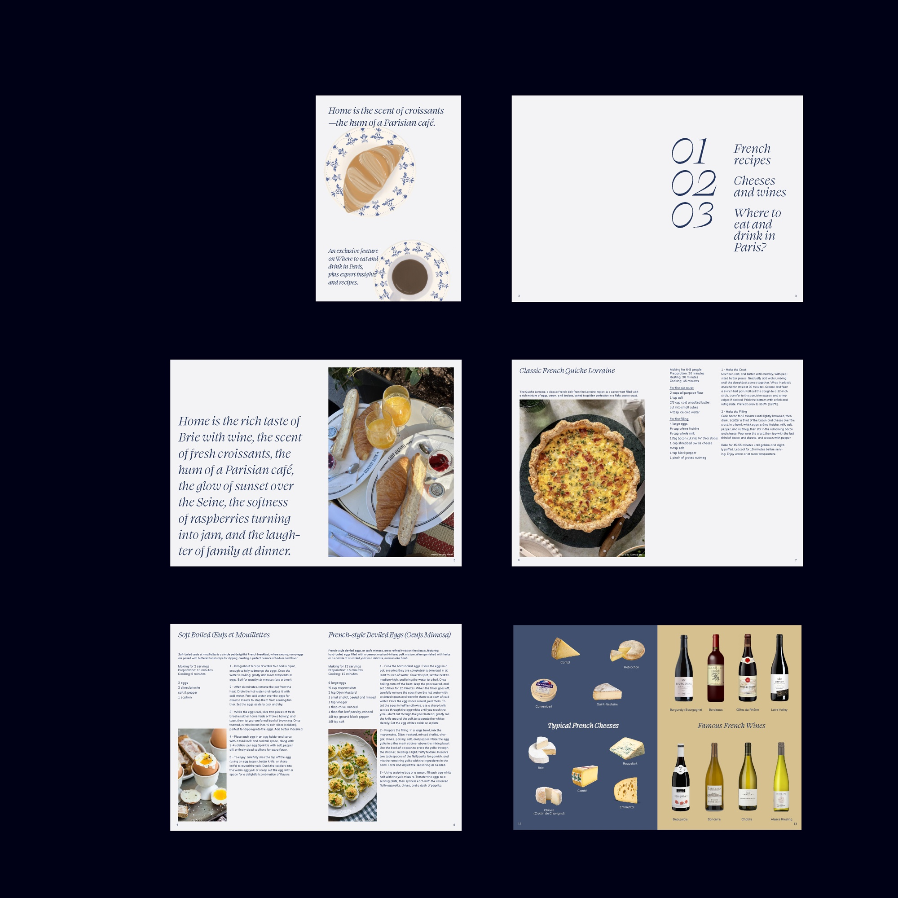
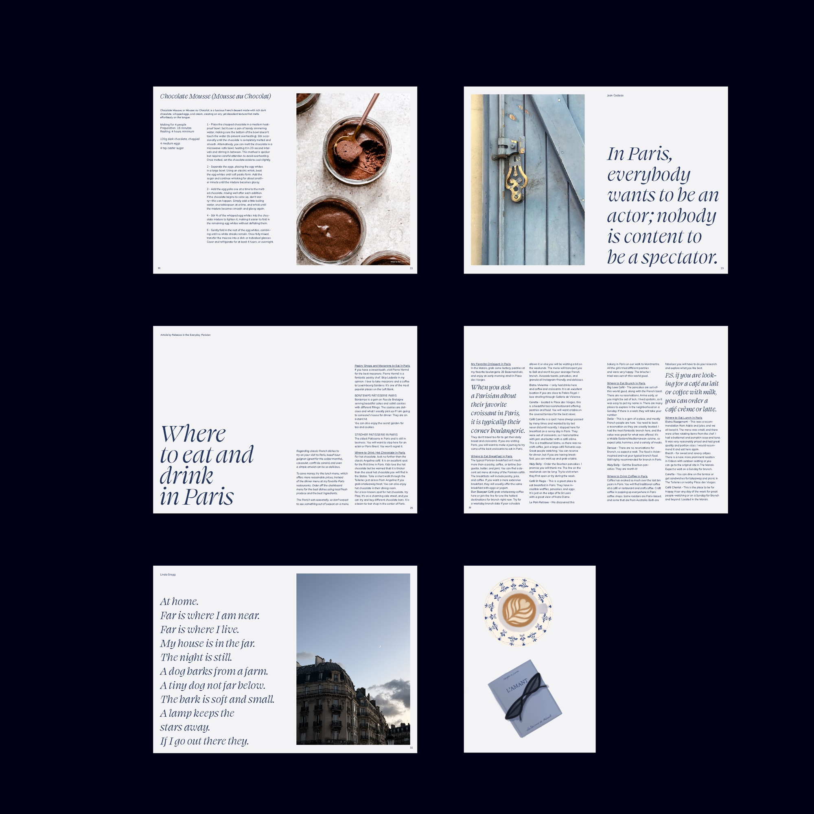

Home is
A magazine about France made from New York — home as a scent, a taste and a sound before it is ever a place.
The project started from a sentence rather than a subject: Home is the scent of croissants — the hum of a Parisian café. Written in New York, about France. Not a guide to the country, but an account of what someone remembers of it from an ocean away — home defined by the senses before geography.
Two typefaces carry the two registers. Swear Display, in italic, is the voice: the opening sentence, the chapter numbers, the quotes. Mulish takes everything procedural — ingredients, timings, steps, captions. The book alternates between a spread that speaks and a spread that instructs, and the illustrations are drawn rather than sourced, so the remembered France stays distinct from the documented one.
Three sections: French recipes, cheeses and wines, and where to eat and drink in Paris — the last from an article by Everyday Parisian.


